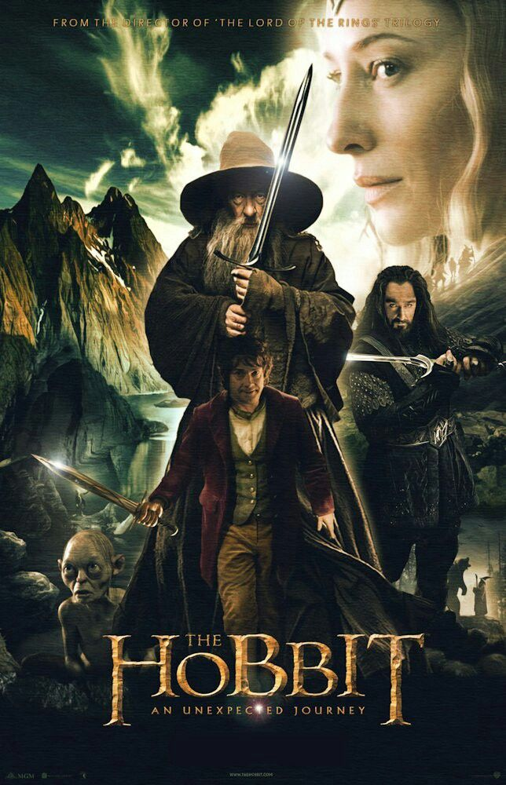

The Hobbit: An Unexpected Journey
2012 | PG-13 | 2h 49m

The Hobbit: An Unexpected Journey is a 2012 epic high fantasy adventure film directed by Peter Jackson
from a screenplay by Fran Walsh, Philippa Boyens, Jackson, and Guillermo del Toro, based on the 1937
novel The Hobbit by J. R. R. Tolkien. It is the first instalment in The Hobbit trilogy, acting as a
prequel to Jackson's The Lord of the Rings trilogy.
The story is set in Middle-earth sixty years before the main events of The Lord of the Rings and
portions of the film are adapted from the appendices to Tolkien's The Return of the King.[7] An
Unexpected Journey tells the tale of Bilbo Baggins (Martin Freeman), who is convinced by the wizard
Gandalf (Ian McKellen) to accompany thirteen Dwarves, led by Thorin Oakenshield (Richard Armitage), on a
quest to reclaim the Lonely Mountain from the dragon Smaug. The ensemble cast also includes Ken Stott,
Cate Blanchett, Ian Holm, Christopher Lee, Hugo Weaving, James Nesbitt, Elijah Wood, and Andy Serkis,
and features Sylvester McCoy, Barry Humphries, and Manu Bennett.
An Unexpected Journey premiered in Wellington on 28 November 2012, and was then released on 12 December
in New Zealand and on 14 December in the United States, by 20th Century Fox. It was almost nine years
after the release of The Lord of the Rings: The Return of the King.[8] The film received mixed reviews
from critics and grossed over $1.017 billion at the box office, making it the fourth highest-grossing
film of 2012. The film received numerous accolades; at the 86th Academy Awards, it was nominated for
Best Production Design, Best Makeup and Hairstyling, and Best Visual Effects.
Bilbo Baggins is swept into a quest to reclaim the lost Dwarf Kingdom of Erebor from the fearsome dragon
Smaug. Approached out of the blue by the wizard Gandalf the Grey, Bilbo finds himself joining a company
of thirteen dwarves led by the legendary warrior, Thorin Oakenshield. Their journey will take them into
the Wild; through treacherous lands swarming with Goblins and Orcs, deadly Wargs and Giant Spiders,
Shapeshifters and Sorcerers. Although their goal lies to the East and the wastelands of the Lonely
Mountain first they must escape the goblin tunnels, where Bilbo meets the creature that will change his
life forever ... Gollum. Here, alone with Gollum, on the shores of an underground lake, the unassuming
Bilbo Baggins not only discovers depths of guile and courage that surprise even him, he also gains
possession of Gollum's "precious" ring that holds unexpected and useful qualities ... A simple, gold
ring that is tied to the fate of all Middle-earth in ways Bilbo cannot begin to know.
A film adaptation of J. R. R. Tolkien's novel The Hobbit (1937) was in development for several years
after the critical and financial success of The Lord of the Rings film trilogy (2001 - 2003),
co-written, co-produced, and directed by Peter Jackson. Jackson was initially going to produce and write
a two-film adaptation of The Hobbit, which was to be directed by Guillermo del Toro.[19] Del Toro left
the project in May 2010, after about two years of working with Jackson and his production team, due to
delays caused in part by financial problems at Metro-Goldwyn-Mayer.[20] Jackson was announced as
director that October.[20] The Hobbit films were produced back to back, like The Lord of the Rings
films. Principal photography for The Hobbit films began on 21 March 2011 in New Zealand[21] and ended on
6 July 2012, after 266 days of filming.[22] Pick-ups for An Unexpected Journey were filmed in July 2012
as well.[23] Work on the film was expected to be completed on 26 November, just two days prior to the
film's Wellington premiere.
Director peter jackson
writers J.R.R Tolkien (novel "The Hobbit") | frank walsh (screenplay) | philippa boyens (screenplay)
composer howard shore
top cast
martin freeman
bilbo
ian mcKellen
Gandalf
cate blanchett
galadriel
ian holm
bilbo baggins
Richard Armitage
thorin
christopher lee
saruman
andy serkis
gollum
Ken Stott
balin
Graham McTavish
dwalin
William Kircher
bifur
James Nesbitt
bofur
Stephen Hunter
bombur
Dean O'Gorman
fili
hugo weaving
lord elrond
Aidan Turner
kili
John Callen
oin
Peter Hambleton
gloin
Jed Brophy
nori
Mark Hadlow
dori
Adam Brown
ori
manu bennet
azog
Sylvester McCoy
radagast
plot
Approaching his 111th birthday, the Hobbit Bilbo Baggins begins writing down the full story of his
adventure 60 years earlier for the benefit of his nephew, Frodo.
Long before Bilbo's involvement, the Dwarf king Thrór brought an era of prosperity for his kin under the
Lonely Mountain until the arrival of the dragon Smaug. Destroying the nearby town of Dale, Smaug drove
the Dwarves out of their mountain and took their hoard of gold. Thrór's grandson, Thorin, sees King
Thranduil and his Wood-elves on a nearby hillside, and is dismayed when they leave rather than aid his
people, resulting in Thorin's everlasting hatred of Elves.
In the Shire, 50-year-old Bilbo is tricked by the wizard Gandalf the Grey into hosting a dinner for
Thorin and his company of Dwarves: Balin, Dwalin, Fíli, Kíli, Dori, Nori, Ori, Óin, Glóin, Bifur, Bofur,
and Bombur. Gandalf's aim is to recruit Bilbo as the company's "burglar" to aid them in their quest to
enter the Lonely Mountain. Bilbo is unwilling to accept at first, but has a change of heart after the
company leaves without him the next day. Bilbo races to join the company. Travelling onward, the company
is captured by three Trolls. Bilbo stalls the Trolls from eating them until dawn, and Gandalf exposes
the trolls to sunlight, turning them to stone. The company locates the Trolls' cave and finds treasure
and Elven blades. Thorin and Gandalf each take an Elf-made blade, Orcrist and Glamdring, respectively;
Gandalf also finds an Elven dagger, which he gives to Bilbo.
The wizard Radagast the Brown finds Gandalf and the company, and recounts an encounter at Dol Guldur
with the Necromancer, a sorcerer who has been corrupting Greenwood with dark magic. Chased by Orcs,
Gandalf leads the company through a hidden passage to Rivendell. There, Lord Elrond discloses a hidden
indication of a secret door on the company's map of the Lonely Mountain, which will be visible only on
Durin's Day. Gandalf later approaches the White Council — consisting of Elrond, Galadriel and Saruman
the White — and presents a Morgul blade, a weapon of the Witch-king of Angmar, which Radagast obtained
from Dol Guldur as a sign that the Necromancer is linked to an eventual return of Sauron. While Saruman
presses concern to the more present matter of the Dwarves' quest, requesting that Gandalf put an end to
it, Gandalf secretly reveals to Galadriel he had anticipated this and had the Dwarves move forward
without him.
The company journeys into the Misty Mountains, where they find themselves amid a colossal battle between
Stone Giants. They take refuge in a cave and are captured by Goblins, who take them to their leader, the
Great Goblin. Bilbo becomes separated from the Dwarves and falls into a crevice where he encounters
Gollum, who unknowingly drops a golden ring. Pocketing the ring, Bilbo finds himself confronted by
Gollum. They play a riddle game, wagering that Bilbo will be shown the way out if he wins or eaten by
Gollum if he loses. Bilbo eventually wins by asking Gollum what he has in his pocket. Noticing his ring
is lost, Gollum realises that Bilbo possesses it and chases him. Bilbo discovers that the ring grants
him invisibility, but when he has a chance to kill Gollum, Bilbo spares his life out of pity and escapes
while Gollum shouts his hatred towards the hobbit Baggins.
Meanwhile, the Great Goblin reveals to the Dwarves that Azog, an Orc war-chief who killed Thrór and lost
his forearm to Thorin in battle outside the Dwarven kingdom of Moria, has placed a bounty on Thorin's
head. Gandalf arrives and leads the Dwarves in an escape, killing the Great Goblin. Bilbo exits the
mountain and rejoins the company, keeping his newly obtained ring secret. The company is ambushed by
Azog and his hunting party, and takes refuge in trees. Thorin charges at Azog, who overpowers and
severely injures him with his Warg. Bilbo saves Thorin from the Orcs and challenges Azog, just as the
company is rescued by eagles summoned by Gandalf. They escape to the safety of the Carrock where Gandalf
revives Thorin, who renounces his previous disdain for Bilbo after being saved by him.
They see the Lonely Mountain in the distance, where the sleeping Smaug is awoken by a thrush knocking a
snail against a stone.
details
release date december 14, 2012 (united states)
Countries of origin New zealand | united states
official site official facebook
languages english
filming locations wellington, new zealand | mangaotaki, waikato
production companies new line cinema | wingNut films | metro-goldwyn mayer (MGM)
box office
budget
$180.000.000 (estimated)
opening weekend us & canada
$84.617.303 | Dec 16, 2012
gross worldwide
$1.017.030.651
gallery